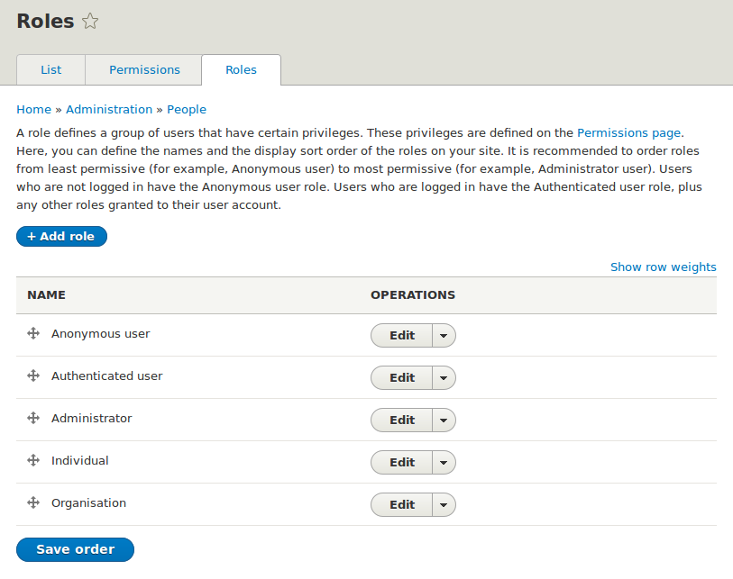
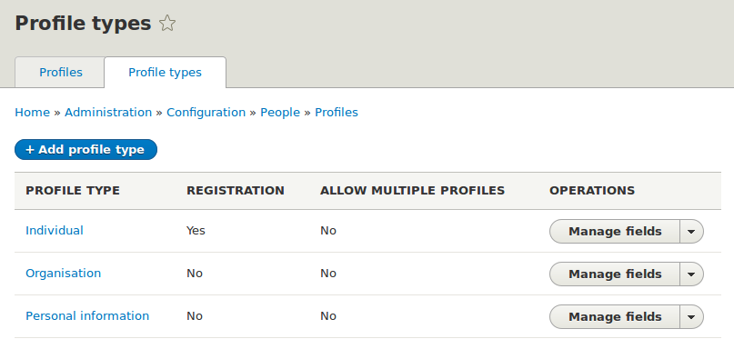
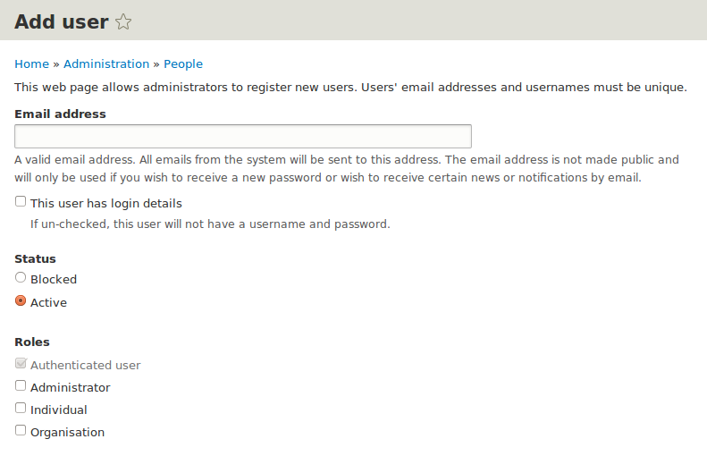

Decoupled User Authentication
This is a building block module. It enables you to build your own CRM system and doesn't do much configuration for you.
For a more configured solution try Contacts.
Installing
Requirements
If you already have a web server, make sure it satisfies Drupal 8's requirements. The recommended memory limit is 256MB or more, and the minimum php requirement is 5.6.
Decoupled User Authentication does not have any module requirements at present, but to build your CRM system we recommend using the folloing modules.
- Views (Now in core :) )
- Profile (Partially in core, but actively developed in contrib)
- Entity (Partially in core, but actively developed in contrib)
- Address
Getting Started with Decoupled User Authentication
Note: These are the steps immediately following the new installation of the Commerce 2 module.
Step 1: Create some Roles
We are using Drupal Roles to bundle Contact types. So if you have different types of contact in your CRM system (eg. Individual, Organisations, Staff, Leads, etc) then you will want to create a user role for each.

Step 2: Create some Profile Types
We use Profile Types as bundles of information attached to our contacts. You can have shared profiles (eg. Individual) or specific profiles (eg. Staff Payroll).

Step 3: Create some Contacts
Contacts are just users without authentication (username and password). So you can create them through the regular 'Add People' form.
